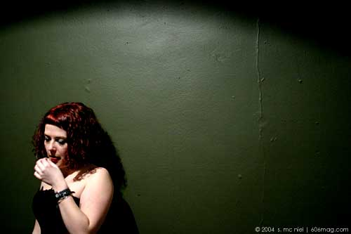

|
 |
|
I want to wear tutus and lacy slips, feather boas and long gloves. I want to dance around on stage, croon to the audience, flaunt and flirt .
I heard of the Suicide Girls only recently. My first exposure to their project was on the Internet. They have a website that is more of a community than merely a source of information. Over 200 women have gathered under the name of the Suicide Girls, and they each have a page with pictures and postings. A small group of them recently performed at the Metro after a couple of live bands. I was lucky enough to go backstage before the event, and interview the touring troupe myself.
“We take traditional burlesque and we update it. We make it something that people of our generation and culture can relate to. It's a little bit punk, it's a little bit rock and roll…very cutsie and sexy, it's very DIY [do it yourself]—it basically comes from each one of the girl's own personalities and identities.”
The lights dimmed, and the swanky voice of Peggy Lee trickled in with the spotlights.
The performers, Snow,
Siren, Shera, Violet, Tegan and Brandy, did take off their tutus,
their gloves, and sometimes their stockings, but they did so while performing
small theatrical vignettes. “We do a lot of parody and humor, and we try
to act out these little stories to go with the music and the costumes.”
I used to want to be a ballerina. At 5 years old, I would twirl around the house in my ballet shoes, believing that a familiarity with Mozart and an addiction to the color pink would surely land me a lead role in the Nutcracker. A couple of the Suicide Girls I spoke with also wanted to be ballerinas when they were younger, and have channeled that desire to dance and perform into their acts. Others landed in the Suicide Girls because of interests in modeling, acting, and “being the lead singer for Led Zeppelin”.
Most of the girls wanted to become a part of the Suicide Girls after seeing the website. All of them fell in love with the site and the idea immediately. “I just knew I had to be a part of this...I just wanted to see girls naked so I joined cause I knew I'd get to see girls naked”
And while they may tip their top hats to old
vaudeville tunes and costumes, they are far from old-fashioned. Decorated
with piercings, tattoos, and dancing in trench coats to Modest Mouse,
these women are not afraid to embrace whatever elements of contemporary
culture that represent their identity.
I might have outgrown the ability to become a professional ballerina, but I could seek stardom with the Suicide Girls. Any female can— the application is online. |
| comments: suicide girls |
|
subject: The show was spectacular
date: 04.02.2004
name: a fan
comment:
Amazing, amazing show. |
| |
subject: Suicide girls
date: 06.23.2004
name: Lindy
comment:
So, I just saw that sixosix posted another Suicide Girls show as an event. I'm torn--I am intrigued, but I'm also slightly disgusted. I’m not sure if this is something I think would be cool in the “it’s liberating not degrading to woman” sense or if it is just a sex show parading as a challenge to modern beauty ideals. Can anyone else who has gone to this tell me what they thought? (girls & guys?) I mean, the idea sounds cool, but the website looks a lot like any other porn site except the girls tend to be tattooed or pierced (and of course you can contact them). |
| |
subject: To Lindy
date: 06.23.2004
name: SG fan
comment:
The site realy is like a lot of other porn sites except for your observations but the live show is something different. No need to look beyond the question of if you like burlesque or not. If you do, there show is w great update on the style. |
| |
subject: Burlesque
date: 06.23.2004
name: maya
comment:
I've seen the site and I've seen the show. Something that I believe the suicide girls are trying to do is represent a positive female sexuality. The semantics are cool, but I don't really see the difference in the site or show. |
| |
subject: Burlesque
date: 06.23.2004
name: Lindy
comment:
Maya: but how is it "a positive female sexuality"? Like an unrepressed sexual image? The Madonna-esque "I like sex" message? Maya, are you saying that they actually do represent a positive female sexuality, or that they fall short? Is it really just a bunch of attention starved girls fulfilling every man's fetish on stage because they want to impress the guys? I guess I’m just trying to get a feel for what sort of slant the show takes. I was expecting some feminist comment about how the suicide girls objectify women but I have yet to see one. What about this makes it any different than playboy with piercings? The website seems to be geared towards getting men to join. I know--I should just go and see what I think of it. But if i'm going to clear a night to do it, I want to make sure I'm not going to walk out disgusted. |
| |
subject: Burlesque
date: 06.23.2004
name: Maya
comment:
The Suicide Girls are the ones claiming to promote a positive female sexuality (from some news video on their web site a while back). When acts use sexuality as a direct medium, I find it hard to see where they would get away without objectifying the subject or viewer - male or female. Where the web site falls short of representing that postive female sexuality, their burlesque show is different - not as intense, silly, fun, kind of redundant with their acts, and kind of challenging to what I think I should object to. You will be in the middle of a sea of gawking guys though. Disgust? I don't think so. Enlightenment? Not at all. Worth going? i'd say it's worth it at least once. |
| |
subject: SC
date: 06.24.2004
name: Lindy
comment:
Thanks!! That was very helpful!! |
| |
subject: Suicide Girls
date: 07.02.2004
name: Lindy
comment:
So, I went last night. Besides Pearl (i think) who did the Hula-hoop bit (which was really good), I really though the SG were basically strippers. I mean, I was really expecting a lot more alternative stuff, but the girls last night (from what I could see at least) weren't pierced, weren't tattooed, didn't have dreadlocks--none of the stuff the website promoted as being the alternative flair to the show. I mean, they looked like your average porn stars, except for a few were flat chested. I don't see how this challenges modern ideals of beauty. I felt like they just reinforced it those ideals they claimed to challenge. As far as being a burlesque show, I feel like the comic nature that should have really taken it from being just a strip show to a burlesque was grossly underwhelming. The “Mrs. Robinson” bit was humorous, but there wasn’t much besides that that seemed very comic. Oh, and Maya, yeah, you’re right, tons of guys—so if you’re looking to pick up a bunch of drunk horny men, it’s a good time. Yes, it was worth going once, but only because I got in free. |
| |
subject: The live show blows
date: 07.05.2004
name: ben vurnee
comment:
I've seen the suicide girls live (at the metro in chicago). It's not fun. It's not funny. It's not interesting. About the only thing that was good in the show was the musical accompanyment... Joan Jett, The Ramones, etc..
It would be great if there was a boy or two as part of the troupe. It would also be great if there were girls who were bigger in stature.
Also, the name suicide girls seems pretty mysoginist to me - women should die... sexy?!!! I don't think so. |
| |
subject: Decide for yourself
date: 07.05.2004
name: Guy Sober
comment:
I've seen the suicide girls live (at the double door in chicago) I think It's fun. I think It's funny. I think It's very interesting.
Visit their site, it's pretty clear to me that if you find something there that interests you, whether a picture or a comment or just the damn color scheme you'll know whether or not you'll enjoy the show if even a little bit.
Don't take my word for it or anyone else's, that is the power of the Internet, try before you buy.
For what it's worth, I'd pay 13 bucks again just to see their take on the Chair scene from Resevoir Dogs, but that's just me.
Much love to Nannette and Sicily ;-) next time I'm in San Francisco I'll be sure to swing by and bring plentiful goodness. |
| |
subject: one of the best shows in awhile
date: 07.06.2004
name: Brian Morris
comment:
One of the best nights out in awhile :: beer, music & confident women :: i can't think of a better way to spend a thursday night ::: I hooted and hollered with the best of them : and gosh darn it was F-U-N ::: I only wish that some of the gals were a little bigger (der tooo skinny!).
As a collector of body modifications myself, it was a blast to see others showin off thier work in a new way...
AND I WON THE YEARS SUBSCRIPTION TO SUICIDEGIRLS.COM!
thanks again six0six :: i look forward to getting the info soon! |
| |
subject: Burlesque
date: 07.06.2004
name: Liz
comment:
Why is burlesque becoming such a trend right now? i haven't seen the other shows around town, but their such an uproar about it. |
| |
subject: hope this trend dies soon
date: 07.08.2004
name: queene
comment:
sg is creepy. and i hate that the site seems to tout itself as subversive and feminist when its actually, gleefully perpetuating the same old story: a woman's ticket to approval and friends and attention is her looks. i'm less offended by straight up traditonal porn...at least its honest. and they really shouldn't call that show "burlesque" either. |
| |
subject: Moulin Rouge?
date: 07.16.2004
name: Lindy
comment:
I agree, the return of the "burlesque" trend (i put it in quotes for a reason) is odd. It was on the cover of some other Chicagoan publication recently. I guess maybe it's because of the movie "Moulin Rouge" ? That's the only thing I can figure. Though, I guess a bunch of topless girls shaking it never really goes out of style.
Anyone else notice that the link to this from the July issue was messed up? |
| |
subject: how do you become one?
date: 11.11.2005
name: anna
comment:
I really want to become a suicide girl. Do they hold tryouts or how do you do it? |
| |
| |